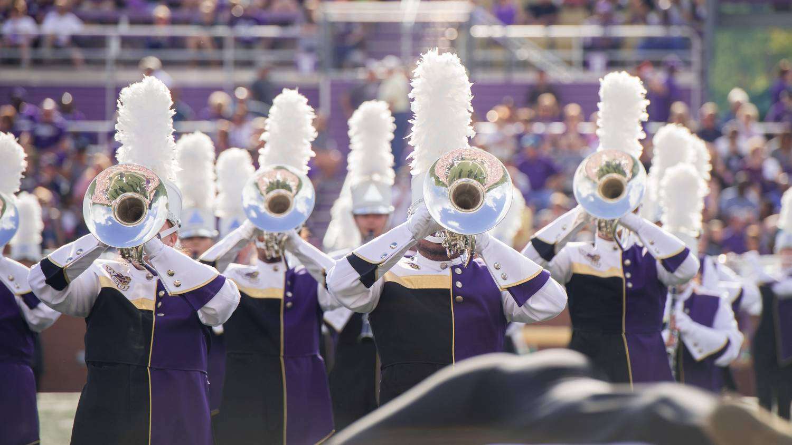
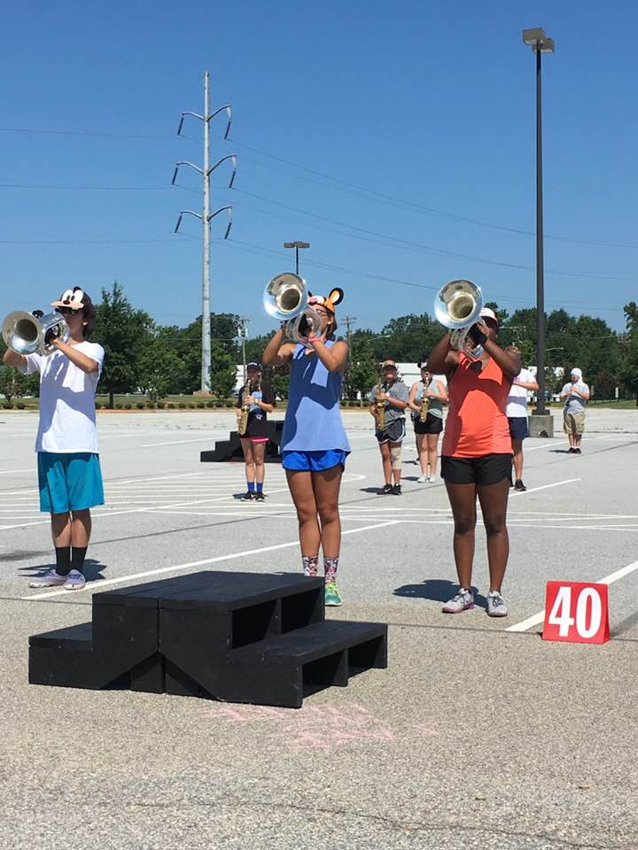
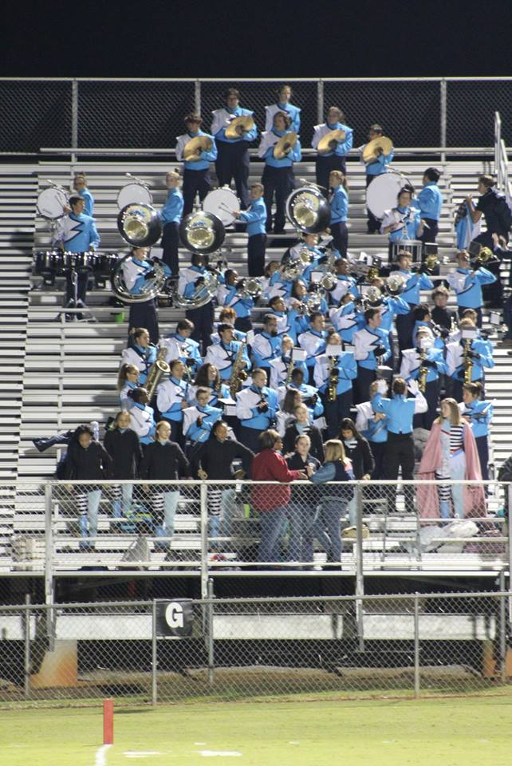
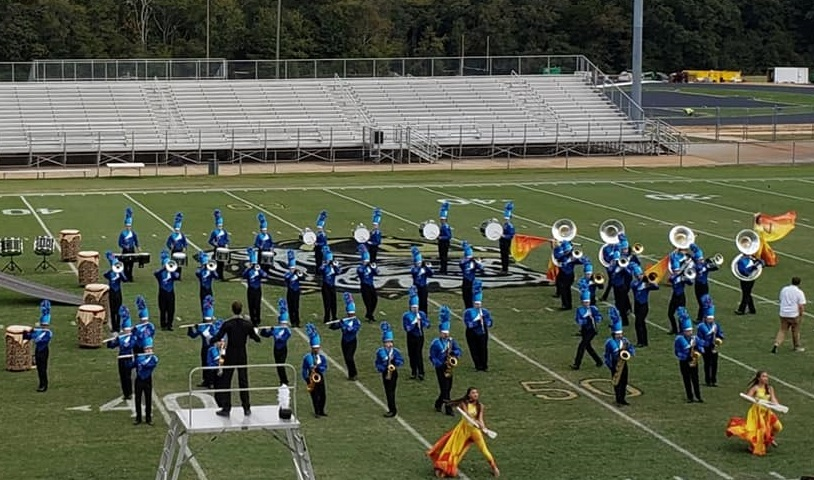

Marching band is an activity that combines musical arts with marching in formations. Bands usually perform at football games and competitions, usually on Friday nights or Saturdays. During competitions, bands perform a show of music and drill ranging from 7-14 minutes long, depending on the band and performance level. At football games, bands will play music in the stands while the football team is playing and usually performs a show during half time.
At the beginning of the season, members participate in band camp, which is several weeks before school starts that new members learn to march and bits of the show are put on the field. The season lasts 3-5 months with the first month and a half about learning the show, the next month and a half competing with other bands and if the football team is good, there may be several months added on for football games.
Band size can range anywhere from less than a dozen members to over 500 members, depending on the school, staff, and region. In smaller programs, the quality of the product is subjectively worse, but everyone knows each other better and feel more like a family. In larger programs, their product is subjectively better as mistakes can be hidden behind other performers, but members don't know each other as well and may only be closely knit with their section.
In marching band, many hours of rehearsal are put in to make the resulting show as good as possible. Many bands have different rehearsal schedule, but 2-3 per week, lasting 2-3 hours each is fairly common. Depending on what facilities are available, bands may use anything from a parking lot to a designated field just for the band.
Before the school year starts, nearly all bands will have 1-3 weeks of band camp, where marching fundamentals are learned and parts of the show are set. Band camp is usually all five weekdays, lasting anywhere from 6-12 hours each day. In one season, each member may put in up to 300 hours working on the show, or up to tens of thousands of man-hours throughout the whole band, all in one season.
Football games are the most common event for a marching band to perform. While the football teams are playing, the band plays music in the stands to get people excited and to make the environment more fun. Sometimes, the opposing team's band will also attend the game and the bands will take turns playing music. During half time, the home team's band will perform their show on the field while the football team rests.
In high school, this is good practice for performing on a real field, in front of a crowd. In college, though, it is a big deal, especially at schools such as Ohio State and Jackson State University. The band has a pre-game show specific to their school and they perform an elaborate half time show, which changes several times throughout the season.
Competitions are when bands (almost always high school) perform their show for a series of judges who score and rank the performances. The competition season usually starts in mid to late September through mid to late October, depending on the band's schedule. Most competitions work by the band arriving about two hours before they perform, usually after a short morning rehearsal.
They unload instruments and props and change into uniform before heading to a warm-up area to get into the performance mindset. About an hour later, the band will walk to the stadium and wait in the goal zone while the previous band finishes their performance. At this point, it is showtime.
Props are rushed into their spots, instruments and electronics are quickly set up and the performers get into their first set of the show (aka. opening set). For the next several minutes, the band will perform their show to their fullest ability, striving for the best possible score.
When the band finishes their show, they quickly clear the field and take props and instruments back to the trucks to be loaded back up. After this, band members will change out of their uniforms and go into the stadium to watch other bands perform. During this time, members will usually hang out, watch bands or get concessions.
Once all the bands are done performing, drum majors and leadership from each band will go into the field for the awards ceremony. Most competitions are divided up into several classes, each of which has visual, music, guard, percussion and placement awards. Once all the awards have been given out, the bands will get onto the busses and return to their school.
